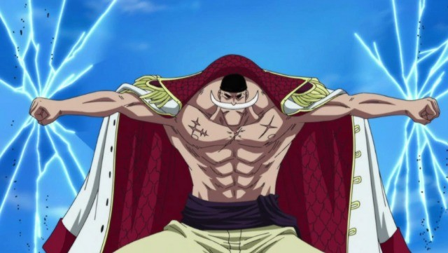
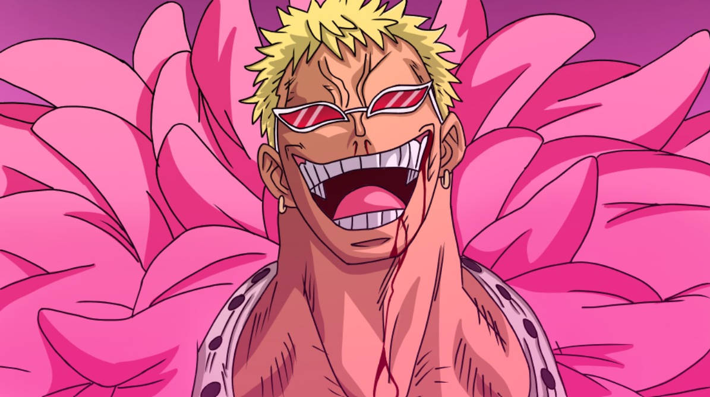
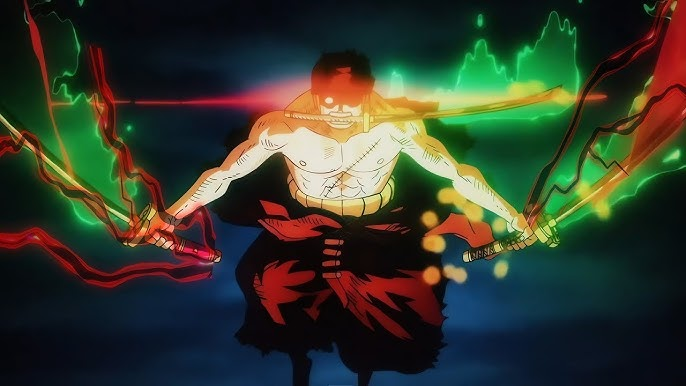

Número 1: Barca Branca

Considerado por praticamente todos o "Homem mais Forte do Mundo", usuario da fruta do
terromoto e um tridente de mais de 2 metros.
Número 2: Donquixote Doflamingo

Um homem com sangue da realeza e considerado "deus" por conta de sua força.
Número 3: Roronoa Zoro

O espadachim mais forte e rápido da grand line e um dos mais fortes do mundo.